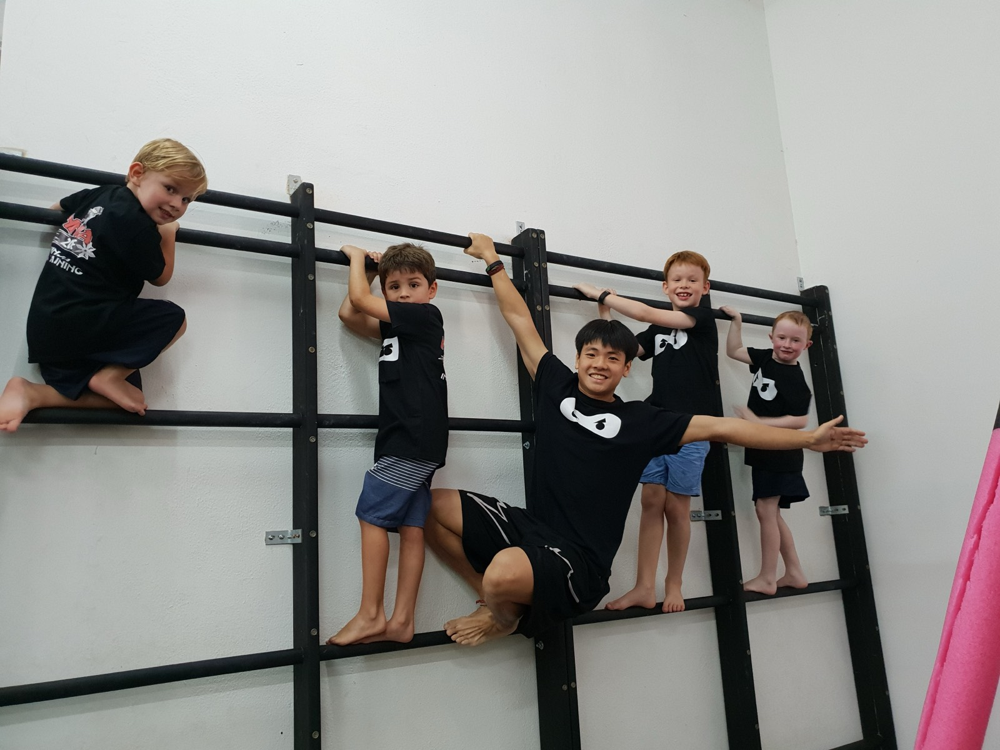

Ninja Tots
Ninja training at toddler scale. Obstacle courses, climbing and movement games turn boundless energy into focused movement, coordination and the listening skills that carry straight into pre-school. Progress is the promise here, and the pace belongs to your child.
What parents notice
A toddler who leaves class steadier on their feet, prouder of what they climbed and crossed, and a little readier to follow an instruction the first time it is given.

- Runs at
- Bukit Timah Bookable
- Dempsey Bookable
- Jurong and Dover Not offered